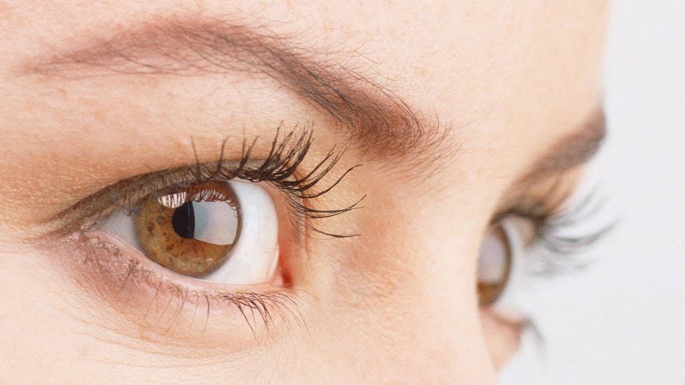
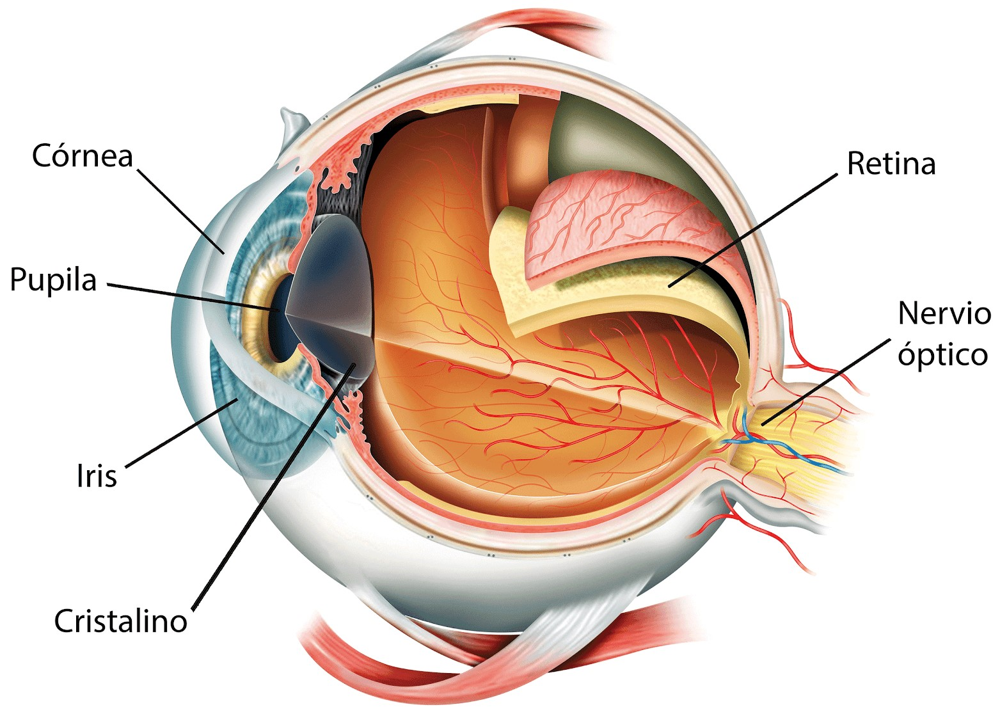

मैंने 2 महीने में अपनी दृष्टि को कैसे बहाल किया
एक साधारण तकनीक
सुमन देवी के अनुरोध पर, दृष्टि बहाली का विषय खोला जाता है
हैलो, मेरा नाम सुमन है और मैं 5 साल तक चश्मा में रहा हूं, 15 के लिए -4.5 लेंस 15, उच्च उन्नत मायोपिया और अस्थिरता के साथ। जब मैं 27 साल का था, तो मैंने अपने चश्मे के साथ लगातार समस्याएं शुरू कीं। यह इस तथ्य के साथ हुआ कि दृष्टि को पुनर्स्थापित करने के तरीके के बारे में इंटरनेट पर कुछ अच्छी समीक्षा मिली।
इससे पहले, मैंने उस जानकारी को नहीं देखा और सोचा कि यह दृष्टि बहाली एक सुंदर शब्द था, लेकिन निष्पादित करना मुश्किल था। मैंने खुद को तैयार किया, कमजोर चश्मे खरीदे, एक दिन निर्धारित किया। सस्ता भारतीय चिकित्सा आदेश और ... 2 महीने में यह मेरी दृष्टि बहाल!
बेशक, यह पहले कुछ दिनों के लिए कुछ भी नहीं देख रहा था। मैं मुश्किल से घर के चारों ओर चले गए, पकाया और जब मैंने अपना -4.5 लेंस हटा दिया ... लेकिन वापस देखकर, यह इतना तेज़ हुआ। मैं इस बात पर इतना विश्वास नहीं कर सका कि पहली बार मैंने एक वर्ष में रिश्तेदारों और परिचितों को बताया, जब मुझे एहसास हुआ कि दृश्य अब कहीं भी नहीं गिर रहा था।
वसूली के दौरान, मैंने सभी सिफारिशों का पालन किया: कितना और कब लेना है, क्या व्यायाम दृष्टि को तेजी से बहाल करने में मदद करेगा, सकारात्मक परिणाम के लिए स्वयं को कैसे सेट करें, आदि।
मुझे पता है कि ऐसे कई साधनों के माध्यम से, वे कहते हैं कि दृष्टि केवल महंगी सर्जरी और सामान की मदद से बहाल की जा सकती है। मैं भी संकोच और अपने दम पर नजर रखने से पहले लंबे और कठिन सोचा था। मैंने बहुत सारी किताबें पढ़ीं, और सलाह के लिए मैं हर किसी को जानता हूं कि इन मामलों में कौन सक्षम है।
मेरे जाने योग्य किनेसियोलॉजिस्ट का दावा है कि शरीर में बहुत अधिक केशिका परिसंचरण पर निर्भर करता है। दृष्टि को बहाल करने के लिए, रक्त परिसंचरण को बढ़ाने और फंडस दबाव को सामान्य करने के लिए आवश्यक है। दबाव की समस्या गंभीर बीमारियों को खींचती है। सौभाग्य से, दवा एक स्तर तक पहुंच गई है जहां सर्जरी और एंटीबायोटिक दवाओं के बिना इन बाधाओं को दूर करना संभव है। उपयुक्त और प्राकृतिक दवाओं के माध्यम से। यह कार्बनिक आंखों को बदलने के बिना, परीक्षणों और संवेदनाओं के आराम के स्तर पर दृष्टि में सुधार करने का प्रभाव देता है।
वास्तव में, यह समझने के लिए कुछ अच्छे वैज्ञानिक लेखों का अध्ययन करने के लिए पर्याप्त है कि दृष्टि को कैसे बहाल किया जाता है। के हिस्से के रूप में , मुझे जो कुछ चाहिए वह मिला। मुझे एहसास हुआ कि दृश्य कैसे बहाल किया जाता है, यह प्रक्रिया मेरे भीतर कैसे रहती है। इसने ताकत और विश्वास दिया कि सब कुछ बाहर काम करेगा!
आखिरकार, अगर मैं (-4.5 से) कर सकता था, तो आप भी कर सकते हैं! मुख्य बात यह है कि पाठ्यक्रम की सिफारिशों का पालन करना और बस मामले की सफलता में विश्वास करना है!
टिप्पणियाँ
-
 सरोज खटुन,दिलचस्प विषय खोला गया ... दिलचस्प अनुभव के लिए धन्यवाद। आप के लिए खुश हूँ!
सरोज खटुन,दिलचस्प विषय खोला गया ... दिलचस्प अनुभव के लिए धन्यवाद। आप के लिए खुश हूँ! -
गीता ,दृष्टि क्यों बिगड़ती है ???
-
शांति सिंह,दुर्भाग्यवश, शिशुओं, समय से पहले, बीमार अधिक से अधिक पैदा होते हैं, और आंखों की संरचना नाजुक और पतली होती है, इंट्रायूटरिन प्रकृति या समय-सारिणी की सबसे छोटी समस्याएं, हाइपोक्सिया और मुख्य कारण हैं।
-
अरुण कुमार,मुझे नहीं पता ... मैं ईमानदार होने के लिए विश्वास नहीं कर सकता। मुझे अपनी दृष्टि इतनी तेजी से मिलती है। यह एक चमत्कार है ... मेरी मां सिर्फ इसे निर्धारित नहीं किया गया था, उसने आखिरकार सर्जरी को राजी किया। हमने 1,200 यूरो का भुगतान किया। लेकिन प्रभाव है।
-
संतोष अली,रोगी के लिए, परिणाम महत्वपूर्ण है, विधि, सर्जरी, दवा या व्यायाम नहीं। क्या अंतर है?
-
कल्पना ,मेरे पास बचपन से बहुत अच्छी दृष्टि थी, पिछले साल मैं स्नातक स्कूल गया था। इसने किताबों के निरंतर पढ़ने, कंप्यूटर पर काम शुरू किया, एक वर्ष में दृष्टि बिगड़ गई, मुझे चश्मा सौंपा गया - 1.75। कभी-कभी चश्मे पहनना असामान्य है, मैं उन्हें हर समय खो देता हूं, मैं उन्हें कहीं भी रखता हूं। मैं पूरी तरह से खराब होने से पहले अपनी दृष्टि वापस चाहता हूं। मुझे आपकी विधि में भी दिलचस्पी थी। मेरे पास कुछ भी नहीं है, मैं दृश्य को सॉर्ट और पुनर्स्थापित करने की कोशिश करूंगा!
-
सरिता रॉय,विषय के लिए प्रशासक धन्यवाद। सुमन देवी - विधि के लिए धन्यवाद! मुझे अपने बेटे के लिए खरीदना है। स्कूल में उसकी आंखों पर उसका बहुत तनाव है। और दृश्य गिर रहा है।
-
सुन्नी ,सुमन देवी, उनके बारे में अधिक जानकारी लिखें कि उन्होंने कहां खरीदा है, यह बहुत दिलचस्प है, मेरे पास पहले से ही 4.25 है
-
शकुंतला ,मुझे यह पता लगाने में भी बहुत दिलचस्पी है। कुछ महीनों में मेरी दृष्टि -4.25 से -5.25 तक गिर गई। मुझे नहीं पता क्या करना है!
-
जोड़ें,मैंने एक लिंक दिया, खो गया?) यहां आदेश। ऐसा लगता है कि अब एक प्रस्ताव है: आधिकारिक साइट
-
लक्ष्मी सेख,हमने अपने पति के साथ अपनी दृष्टि भी बरामद की है। हमारे पास दोनों हमारे पूरे जीवन चश्मे थे। आधे साल पहले हमने पीना शुरू कर दिया था और अब हम दोनों को पूरी तरह से देख सकते हैं। मेरे पति थोड़ा बदतर हैं, लेकिन उसकी आंखों में उसके पास अधिक तनाव है, मुझे लगता है कि यही कारण है कि।
-
श्री बिबी,विजन सीधे शरीर में यकृत की स्थिति से संबंधित है। आपको आंतों और यकृत को लगातार शुद्ध करना होगा। पोषण प्रणाली में गाजर (रस + सलाद) + खट्टा क्रीम, ब्लूबेरी शामिल हैं। आंखों का अभ्यास। उपयोगी, उदाहरण के लिए, झुकाव के बिना, मोमबत्ती लौ, नाक की नोक। आंतरिक स्थापना को अक्षम करें "मेरी आंखें इस पर नहीं दिखाई देगी»
-
अनीता,दृष्टि को बहाल करने से पहले, किसी को अपने समय के एक या दो महीने दान करने का फैसला करना चाहिए! मैंने व्यक्तिगत रूप से एक डेढ़ साल पहले अपनी दृष्टि को बहाल कर दिया (इंटरनेट पर आदेश दिया गया) गर्मियों के लिए और मेरे +2.75 गिलास को हटा दिया, जो डॉक्टरों ने जीवन के लिए निर्धारित किया। सबसे महत्वपूर्ण बात अनुशासन है। तकनीकों को याद न करें और आपको निर्देशों का स्पष्ट रूप से पालन करना चाहिए! और निश्चित रूप से ठीक होने की इच्छा! क्योंकि विचार सामग्री हैं! उन सभी को शुभकामनाएं जिन्होंने इसे करने की हिम्मत की!
-
रेखा सिंह,मेरे पास + 2.75 भी है। इसे ठीक करने का कोई तरीका है? वहां करने के लिए क्या है? बस आदेश और प्राप्त करें? यह बात है? यदि हां, तो उन्होंने हमें यहां सभी अंधे लोगों को दिया है!
-
मंजू,एक महीने के लिए यह मेरे पति की दृष्टि को बहाल कर दिया, एक उत्कृष्ट उपकरण, सबकुछ काम करता है, मैं इसकी अनुशंसा करता हूं। और संचालन नहीं किया जा सकता है, मैंने सुना है कि ऑपरेशन के बाद लोग अंधे हो जाते हैं
-
मो सोलंकी,नमस्कार! क्या आप मुझे एक आंख की परीक्षा देने के लिए एक अच्छा क्लिनिक बता सकते हैं? मेरे पास जन्मजात आंख की बीमारी है, मैं चश्मा नहीं समझता! धन्यवाद!
-
गोपाल कौर,यदि आप चश्मा या लेंस नहीं पहन सकते हैं या बस उन्हें पहनना पसंद नहीं करते हैं (मेरे जैसे), सबसे अच्छा, कैप्सूल भी है। दृष्टि 100% वसूली नहीं हो सकती है, लेकिन मैंने 7 साल में कोशिश की है, वह बेहतर आकार में बरामद हुआ है। और सबसे महत्वपूर्ण बात यह है कि प्रतिगमन नहीं होता है। बस -3 के रूप में यह -0.75 चला गया, यह गिरता नहीं है, भले ही मैंने लंबे समय तक कैप्सूल पीना बंद कर दिया हो।